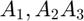
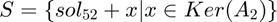
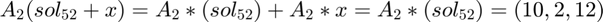

Exercice 5, Résolution matricielle de systèmes linéaires
Contents
Ici le l'objectif sera de transformer le système d'équations en matrice puis d'utiliser la méthode rref de matlab et d'en analyser le résultat.
Soit  les matrices correspondantes aux systèmes des points 1, 2 et 3. Initialisation des variables de l'énoncé:
A1 = [6 1 -5 6; 2 1 3 11; 4 -9 7 12] A2 = [6 1 -7 10; 2 2 3 2; 8 3 -4 12] A3 = [1 2 3 4 1; 2 3 4 1 -2; -2 4 -5 2 0; 8 1 -1 3 1]
A1 =
6 1 -5 6
2 1 3 11
4 -9 7 12
A2 =
6 1 -7 10
2 2 3 2
8 3 -4 12
A3 =
1 2 3 4 1
2 3 4 1 -2
-2 4 -5 2 0
8 1 -1 3 1
5.1)
rref_A3=rref(A1); sol_51 = rref_A3(:,4);
On vérifie que l'on a bien la bonne solution:
A1(1:3, 1:3)*sol_51
ans =
6.0000
11.0000
12.0000
5.2)
rref_A2=rref(A2) sol_52 = rref_A2(:,4) A2(1:3, 1:3)*sol_52
rref_A2 =
1.0000 0 -1.7000 1.8000
0 1.0000 3.2000 -0.8000
0 0 0 0
sol_52 =
1.8000
-0.8000
0
ans =
10
2
12
sol_52 est bien solution du système cependant, comme rref(A2) contient moins que 3 positions pivots il existe en réalité une infinité de solutions.
On peut décrire cet ensemble de solutions S comme . En effet:

5.3)
rref_A3=rref(A3) sol_53 = rref_A3(:,5) A3(1:4, 1:4)*sol_53
rref_A3 =
1.0000 0 0 0 -0.0857
0 1.0000 0 0 -0.6143
0 0 1.0000 0 -0.1736
0 0 0 1.0000 0.7088
sol_53 =
-0.0857
-0.6143
-0.1736
0.7088
ans =
1.0000
-2.0000
-0.0000
1.0000
De la même manière que au point 5.1), sol_53 est la seule solution du système.